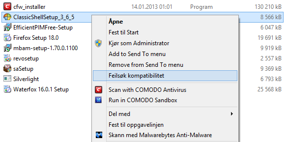

I found a way that works.
When trying to reinstall, I rather tried this :

"Feilsøk kompabilitet" is in Norwegian , and means something like " scan for compatibility error"
After fixing that error , I could install the Classic Shell again.
Thanks for the help
Edit: Maybe one reason to the problems could be that W8 made some updates 1 days ago ?